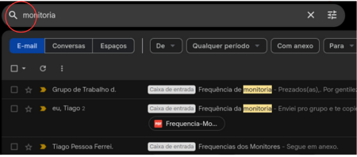
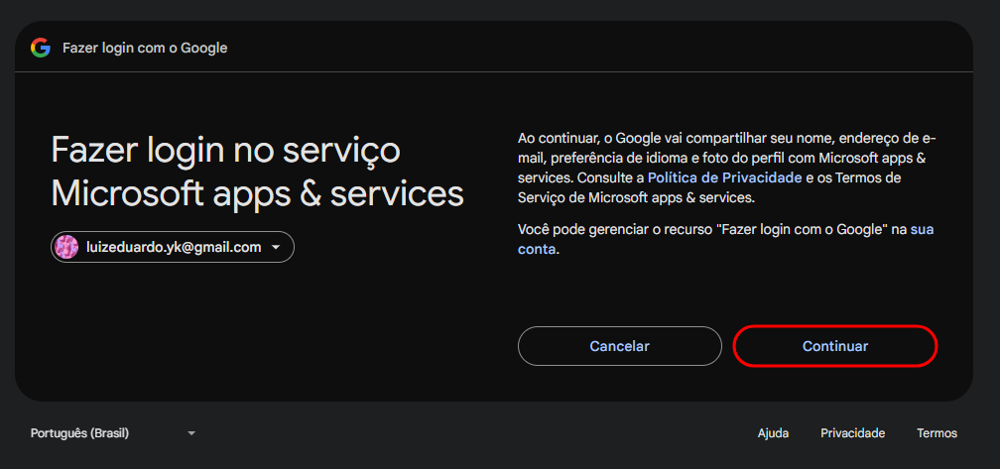

Bem-vindo ao módulo de Gmail e Internet!
Nesse módulo você aprenderá sobre alguns tópicos, onde cada um da equipe elaborou o material explicando detalhadamente.
O que você aprenderá aqui?
- Introdução à Internet
- Segurança na Internet
- Passos iniciais com o Gmail
- Enviando e recebendo e-mails
- Organizando e-mails
- Configurando e personalizando o Gmail
Modulo 1: Introdução à Internet
Sejam muito bem-vindos! Nesta aula, vamos aprender um pouco sobre o uso seguro da internet e como ela pode facilitar nosso dia a dia, ajudando-nos a nos comunicarmos, buscarmos informações e realizarmos tarefas importantes, como pagar contas e conversar com familiares. Vamos com calma. Pode parecer complicado no começo, mas, independentemente da idade, com paciência e prática, tudo se torna mais fácil. Você consegue!
O que é a Internet?
A internet é como uma grande rede que conecta computadores, celulares e outros dispositivos em todo o mundo. Com ela, podemos acessar informações, assistir a vídeos, enviar mensagens e muito mais.
Como funciona a internet?
Para o que podemos usar a internet?
O que é um navegador?
Um navegador é um programa que usamos para acessar sites na internet. Os navegadores mais conhecidos são:

Principais partes do navegador
O que são páginas web?
São os sites que visitamos, como um jornal digital, uma loja online ou uma rede social. Algumas páginas conhecidas são:
Motores de Busca
Os motores de busca são ferramentas que ajudam a encontrar informações na internet. O mais conhecido é o Google, mas também existem o Bing e o Yahoo.
Como pesquisar no Google?
Dicas para encontrar informações rapidamente:
Segurança na Internet
A internet traz muitas vantagens, mas também precisamos ter cuidado para não cair em golpes. Aqui estão algumas dicas importantes para navegar com segurança.
Como saber se um site é seguro?
Dicas de segurança online:
Como identificar golpes?
Antes de seguir para o próximo módulo, que tal fazer uma tarefa prática?
Módulo 2: Navegação Segura
Seja bem-vindo a esta parte do material de ensino sobre Navegação Segura! Neste módulo, você aprenderá tudo o que precisa saber sobre como identificar sites e seguros, HTTPS e dicas de segurança para se proteger. Essas explicações contêm itens básicos para que você possa identificar sempre e se proteger. Agora, vamos começar!
O que é Navegação Segura?
Navegação segura é o conjunto de práticas e tecnologias que garantem a proteção dos usuários enquanto eles acessam a internet. O objetivo principal é evitar que informações sensíveis, como senhas, dados bancários ou documentos pessoais, sejam interceptadas por hackers ou cibercriminosos. Isso é especialmente importante em transações online, como compras em e-commerces ou acesso a serviços bancários, onde a exposição de dados pode levar a fraudes e prejuízos financeiros.
Para garantir uma navegação segura, é essencial utilizar conexões criptografadas, como o protocolo HTTPS, e verificar a autenticidade dos sites. Além disso, os usuários devem estar atentos a possíveis golpes, como phishing, onde criminosos criam sites falsos para enganar as vítimas e roubar seus dados. A navegação segura também envolve o uso de ferramentas de proteção, como antivírus e firewalls, que ajudam a bloquear ameaças antes que elas causem danos
Sites Seguros: Como Identificá-los
Um site seguro é aquele que utiliza tecnologias para proteger os dados dos usuários, garantindo que informações sensíveis não sejam interceptadas ou roubadas. A principal forma de identificar um site seguro é observar se ele usa o protocolo HTTPS, indicado por um cadeado ao lado da URL no navegador. O HTTPS criptografa a comunicação entre o navegador e o servidor, tornando os dados ilegíveis para qualquer pessoa que tente interpretá-los durante a transmissão.
Além do HTTPS, sites seguros possuem certificados SSL/TLS válidos, emitidos por autoridades certificadoras (CAs). Esses certificados garantem que o site é autêntico e que a conexão é segura. Quando você acessa um site com HTTPS, o navegador verifica o certificado e, se tudo estiver correto, exibe o cadeado e a indicação de "Seguro". Caso o certificado seja inválido ou o site não use HTTPS, o navegador pode exibir um aviso de risco, alertando o usuário para não prosseguir assim mostrado anteriormente.
HTTPS: O Protocolo de Segurança
O HTTPS (HyperText Transfer Protocol Secure) é a versão segura do protocolo HTTP, usado para transferir dados entre o navegador do usuário e o servidor de um site. A principal diferença entre HTTP e HTTPS é a criptografia, que protege os dados durante a transmissão. Isso é feito por meio de protocolos como SSL (Secure Sockets Layer) ou TLS (Transport Layer Security), que codificam as informações, tornando-as ilegíveis para qualquer pessoa que tente interpretá-las.
Além da criptografia, o HTTPS também garante a autenticidade do site. Quando você se conecta a um site com HTTPS, o navegador verifica o certificado digital do site, emitido por uma autoridade certificadora confiável. Isso assegura que você está se conectando ao servidor correto e não a uma versão falsificada criada por criminosos. Essa autenticação é crucial para evitar golpes de phishing, onde sites falsos tentam enganar os usuários para roubar seus dados.
Por que a Navegação Segura é Importante?
A navegação segura é essencial para proteger suas informações pessoais e financeiras de ameaças online. Sem ela, dados como senhas, números de cartão de crédito e documentos podem ser facilmente roubados por hackers, especialmente em redes públicas ou sites não seguros. Além disso, a falta de segurança pode levar a golpes como phishing, onde criminosos criam sites falsos para enganar as vítimas e roubar seus dados.
Outro aspecto importante da navegação segura é a proteção da privacidade. Ao utilizar conexões criptografadas, como o HTTPS, você impede que terceiros monitorem suas atividades online. Isso é especialmente relevante em um mundo onde a coleta de dados é cada vez mais comum. A navegação segura também ajuda a cumprir regulamentações de proteção de dados, como a LGPD no Brasil, que exigem que empresas e sites adotem medidas para proteger as informações dos usuários.
Dicas Práticas para Navegar com Segurança
Para garantir uma navegação segura, é importante adotar algumas práticas simples, mas eficazes. Primeiro, sempre verifique se o site que você está acessando utiliza HTTPS, indicado pelo cadeado na barra de endereços do navegador. Isso garante que a conexão é criptografada e que seus dados estão protegidos. Evite inserir informações pessoais ou financeiras em sites que não usam HTTPS, pois eles não oferecem segurança adequada.
Outra dica importante é desconfiar de links suspeitos recebidos por e-mail, mensagens ou redes sociais. Muitos golpes de phishing começam com um link que leva a um site falso, criado para roubar seus dados. Sempre verifique a autenticidade do site antes de clicar em links ou fornecer informações. Além disso, mantenha seu navegador, sistema operacional e aplicativos atualizados, já que as atualizações frequentemente incluem correções de segurança que protegem contra novas ameaças.
Você chegou ao final deste módulo sobre Segurança na internet! Esperamos que este material tenha sido útil para você compreender como se proteger no seu dia a dia. Agora que você consegue ter a base de como se proteger e ter segurança na sua navegação, está pronto para seguir em frente e continuar aprendendo mais sobre como usar a Internet de maneira eficaz.
Módulo 3: Passos iniciais com o Gmail
O que é o Gmail?
O Gmail é um serviço de e-mail gratuito oferecido pelo Google. Com ele, você pode enviar e receber mensagens, armazenar contatos e organizar seus e-mails em diferentes categorias. Além disso, o Gmail pode ser acessado pelo computador, celular ou tablet, tornando-se uma opção prática e segura.
Criando uma conta no Gmail
Passo 1: Acesse o site do Gmail
- Abra um navegador de internet (Google Chrome, Edge, Firefox, etc.).
- Digite www.gmail.com na barra de endereços e pressione Enter.
- Clique em "Criar conta".
Passo 2: Preencha suas informações
- Escolha se a conta será para você ou para seu trabalho/empresa.
- Digite seu nome e sobrenome.
- Escolha um nome de usuário (este será seu endereço de e-mail, como exemplo@gmail.com).
- Crie uma senha segura e confirme-a.
Informações adicionais
- Informe um número de telefone (opcional, mas útil para recuperação de senha).
- Adicione um e-mail de recuperação (opcional).
- Informe sua data de nascimento e gênero.
- Clique em "Próxima".
Passo 4: Aceite os termos
- Leia os Termos de Serviço e a Política de Privacidade do Google.
- Clique em "Concordo" para finalizar a criação da conta.
Agora, sua conta do Gmail está criada e pronta para uso!
Apresentando a interface e seções do Gmail
Caixa de Entrada
Rascunhos
Enviados

Lixo
Spam
Módulo 4: Enviando e Recebendo E-mails no Gmail
Seja bem-vindo a esta parte do material de ensino sobre como utilizar o Gmail e a Internet! Neste módulo, você aprenderá tudo o que precisa saber sobre envio e recebimento de e-mails, um dos principais meios de comunicação digital. Vamos abordar desde o acesso ao Gmail até o envio de mensagens, incluindo recursos como CC, CCO, anexos, organização da caixa de entrada e configurações importantes. Este tutorial contém explicações detalhadas e espaços reservados para que você possa adicionar capturas de tela e acompanhar cada etapa com facilidade. Agora, vamos começar!
Acessando o Gmail
- No computador, abra seu navegador de internet (Google Chrome, Firefox, Edge, etc.). No smartphone, abra o app Gmail.
- No navegador, digite https://mail.google.com/ na barra de endereços e pressione Enter. No aplicativo, se não estiver logado, toque em "Adicionar Conta".
- Caso não esteja logado, a tela de login do Google aparecerá:
- Digite seu endereço de e-mail ou telefone associado à conta do Gmail.
- Clique em "Próxima".
- Digite sua senha e clique/toque em "Próxima".
- Agora você será direcionado à Caixa de Entrada do Gmail, onde verá seus e-mails recebidos.
Exemplo no Smartphone

Exemplo no computador
Enviando um E-mail
- No computador, clique no botão + Escrever no canto superior esquerdo. No smartphone, toque no botão + (Escrever e-mail) (ícone de lápis, no canto inferior direito).
-
Uma nova janela/tela aparecerá com os seguintes campos:
- Para: Digite o endereço de e-mail do destinatário.
- CC (Com Cópia): Permite enviar uma cópia do e-mail para outras pessoas. Os destinatários inseridos aqui verão todos os outros que receberam a mensagem.
- CCO (Com Cópia Oculta): Envia cópias do e-mail sem que os destinatários saibam quem mais recebeu a mensagem.
- Assunto: Escreva um título curto e objetivo que resuma o conteúdo do e-mail.
- Corpo do e-mail: Digite a mensagem que deseja enviar. Pode incluir textos, links, imagens e outros elementos.
-
Opções adicionais:
- Marcar como Importante: Clique no ícone de estrela para destacar o e-mail, facilitando sua localização posterior.
- Formatar texto: Use as opções de formatação (negrito, itálico, sublinhado, etc.) para melhorar a apresentação do e-mail.
- Adicionar anexos: No smartphone ou no computador, toque no ícone de clipe (1) e selecione um arquivo do seu dispositivo.
- Quando tudo estiver pronto, clique/toque no botão Enviar.
Exemplo no Smartphone

Exemplo no computador

Recebendo e Respondendo E-mails
- Acesse sua Caixa de Entrada.
- Clique/toque no e-mail desejado para abri-lo.
- Para responder, clique/toque no botão Responder (ícone de seta curva abaixo da mensagem).
- Digite sua resposta e clique/toque em Enviar.
Exemplo no Smartphone:
Exemplo no Computador
Você chegou ao final deste módulo sobre envio e recebimento de e-mails no Gmail! Esperamos que este material tenha sido útil para você compreender como utilizar essa ferramenta essencial no dia a dia. Agora que você já domina as principais funções do Gmail, está pronto para seguir em frente e continuar aprendendo mais sobre como usar a Internet de maneira eficaz.
Módulo 5: Organização de e-mails
- Marcar como importante:
- Identificar o e-mail que deseja marcar.
- Selecionar o ícone de bandeira ao lado da estrela.
- O e-mail será marcado como importante e aparecerá na seção “importante”.
- Arquivar e-mails:
- Selecione o e-mail que deseja arquivar.
- Clique no ícone de arquivamento (uma pasta com uma seta para dentro).
- O e-mail será removido da Caixa de Entrada e armazenado na seção “Todos os e-mails”.
- Selecione o e-mail e clique em mover para Caixa de Entrada (ícone semelhante ao de arquivamento).

- Excluir e-mails
- Selecione o e-mail que dejesa arquivar.
- Clique no ícone de lixeira.
- O e-mail será movido para a seção “Lixo” e será excluído permanentemente após 30 dias.
- Criar marcadores
- No painel esquerdo do Gmail, clique em “Mais” e depois “Criar novo marcador”.
- Dê um nome ao seu marcador e clique em “Criar”.
- Para aplicar um marcador a um e-mail, selecione o e-mail, clique no ícone de etiqueta e escolha o marcador desejado.
Busca e Filtragem de e-mails
- Buscar e-mails
- Na barra de pesquisa no topo do Gmail, digite palavras-chaves, remetente ou assunto do e-mail que deseja encontrar.
- Pressione Enter para ver os resultados da busca. 
- Filtrar e-mails
- Na barra de pesquisa, clique no ícone de filtro (um ícone de linhas com uns traços).
- Preencha os campos com os critérios desejados (remetente, destinatário, assunto, etc.).
- Clique em “Criar filtro” para aplicar o filtro.
- Escolha as ações que deseja que o Gmail execute automaticamente com os e-mails que correspondem ao filtro (arquivar, marcar com importante, etc.).

Módulo 6: Configurando e personalizando o Gmail
Nesta seção, abordaremos algumas configurações e personalizações úteis no dia a dia de uso do Gmail, com o propósito de facilitar e/ou adicionar funcionalidades. Abordaremos os seguintes tópicos:
Como acessar o Gmail sem internet?
Apesar do grande acesso à internet nos dias de hoje, ainda vivemos aqueles momentos — aqueles fatídicos momentos — em que nos encontramos sem um wi-fi por perto. Esteja você viajando com seu laptop sem uma rede para se conectar ou em casa após um problema no provedor de internet lhe deixar off-line, todos nós ficaremos sem conexão vez ou outra. Nesses momentos, uma das desvantagens de utilizar um serviço de e-mail online é, justamente, não estar online para conseguir acessá-lo.
Mas existe uma solução! O Gmail permite que você guarde uma cópia dos seus e-mails localmente, permitindo que você os acesse pelo navegador mesmo sem internet (Veremos mais à frente outra forma de fazer isso). Confira a seguir como ativar essa opção e alguns detalhes sobre ela. Mas atenção: Essa opção só está disponível no navegador Google Chrome. Navegadores como Firefox e Safari (Apple) não o suportam.
Passo a Passo
- Acesse o Gmail;
- Clique no ícone de configurações (a engrenagem) no canto superior direito;
- Clique em “Mostrar todas as configurações”;
- Clique na aba “Off-line”;
- Já na seção, marque a caixinha “ativar e-mail off-line”;
- Agora, escolha o período máximo de armazenamento dos e-mails;
- Escolha se deseja manter os e-mails armazenados ao trocar/desconectar sua conta Google. Após isso clique em “Salvar alterações”;
- Caso tenha escolhido manter os e-mails, a seguinte caixa de diálogo aparecerá. Evite ativar essa funcionalidade em computadores públicos;
- A página será recarregada e o Gmail irá lhe sugerir que adicione sua página inicial (a Caixa de Entrada) aos favoritos do navegador;
- Agora aguarde enquanto os e-mails são sincronizados. O uso do Gmail pode ficar instável enquanto a sincronização ocorre;
- Ao fim da sincronização, você verá a seguinte caixa de diálogo sinalizando que o Gmail off-line já está pronto para uso!


Como preparar uma assinatura?
Tornou-se comum incluir no fim de e-mails uma pequena assinatura que tanto identifica o remetente quanto serve como conclusão padronizada para os mesmos. Muito utilizado por profissionais para finalizar seus e-mails, veremos como criar uma assinatura no Gmail.
Passo a passo
- Acesse o Gmail;
- Clique no ícone de configurações (a engrenagem) no canto superior direito;
- Clique em “Mostrar todas as configurações”;
- Desça a página até encontrar a seção “Assinatura”;
- Para criar uma nova assinatura, clique em “Criar novo” e nomeie sua assinatura (você poderá criar múltiplas assinaturas);
- Em seguida, defina o conteúdo da assinatura. Você pode personalizá-la como quiser, até mesmo adicionando imagens;
- Você pode criar novas assinaturas clicando em “Criar novo”, renomear assinaturas existentes clicando no ícone de lápis próximo a seu nome ou deletá-las clicando no ícone de lixeira. Também é possível escolher qual assinatura será usada como padrão em novos e-mails e qual será usada em respostas ou encaminhamentos.
- Por fim, desça um pouco a página e clique no botão “Salvar alterações”. Pronto! Sua assinatura está pronta para ser usada nos novos e-mails!
Como programar respostas automáticas
Outra função interessante do Gmail é a possibilidade de programar respostas automáticas. Útil para quando se está de férias ou indisponível por certo tempo, essa funcionalidade garante que quem tentar entrar em contato vai saber que a resposta pode demorar.
Vejamos à seguir como ativar essa opção:
- Acesse o Gmail;
- Clique no ícone de configurações;
- Clique em “Mostrar todas as configurações”;
- Desça a página até a seção “Resposta automática de férias”. Para ativar a opção marque a opção “Ativar resposta automática de férias”;
- Escolha à partir de que dia a automação entrará em vigor e, opcionalmente, o dia que se encerrará. Defina o assunto e conteúdo da mensagem. Quando terminar de personalizar, não esqueça de clicar em “Salvar alterações”, logo abaixo.
Conectando o Gmail ao Outlook
Outra maneira de acessar o Gmail offline é conectando-o ao cliente de email da Microsoft, o Outlook. Utilizando este, todos os e-mails são salvos automaticamente sem um período máximo de permanência. Além disso, pode ser acessado tanto pelo navegador quanto por programa próprio que já vem instalado em computadores com Windows.
Vejamos como conectar o Gmail ao Outlook:
- Aperte o botão do Windows, ou clique na caixa pesquisar no canto inferior esquerdo da tela do seu computador;
- Pesquise por “Outlook” e clique em abrir;
- Com o programa aberto, insira seu endereço de e-mail e clique em continuar;
- O programa lhe redirecionará para entrar com sua conta Google. Selecione sua conta na lista que aparece (caso sua conta não apareça, entre com seu e-mail e senha);
- Na tela seguinte, clique em continuar para confirmar a integração; 
- Em seguida, o Google lhe perguntará que permissões você deseja conceder ao Outlook. Marque a caixinha “Selecionar tudo” e clique em “Continuar” no fim da página;
- Se o seguinte pop-up aparecer, clique em “sempre permitir que office.outlook.com abra esse tipo de link no app associado” e após em “Abrir Outlook”;
- Clique em “Avançar” na tela que aparecerá depois do Outlook ser aberto;
- Logo o Outlook lhe perguntará se deseja enviar dados opcionais de diagnóstico. Fique à vontade para marcar o que quiser e depois clique em “Aceitar”;
- Na próxima tela, novamente, clique em “Avançar”;
- Por fim, clique em “Aplicar configurações” ou “Pular”, conforme sua escolha;
- O seguinte pop-up surgirá, solicitando que você autorize o compartilhamento de seus dados pessoais. Recomendamos que rejeite, mas a escolha é sua;
- Prontinho! Você já pode utilizar o Gmail no Outlook!
E este é o fim do nosso módulo de Gmail. Caso sinta necessidade, volte às instruções anteriores e refaça o processo. Além disso, não deixe de explorar ainda mais o Gmail, saiba que com o uso ele se tornará cada vez mais familiar. Também não se contenha em pesquisar online possíveis dúvidas que você tenha — lembrando de tomar cuidado com links e sites suspeitos! Nunca instale nada sem ter certeza absoluta de que é confiável.
Agora, vamos praticar!
Clique no botão abaixo para abrir o questionário do Gmail e colocar em prática o que você aprendeu!
Responda nosso Quiz